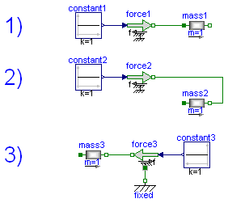
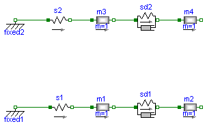
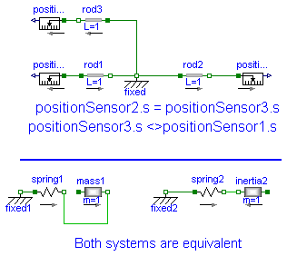
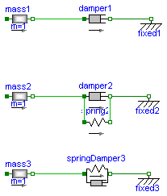
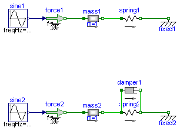
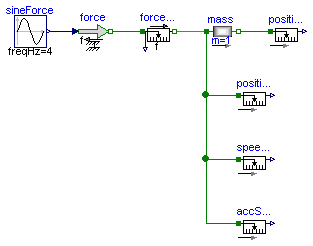
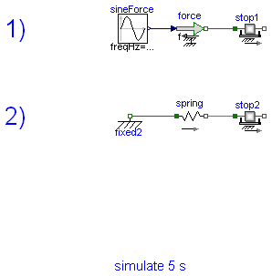
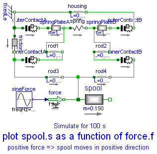
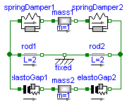

This package contains example models to demonstrate the usage of the Translational package. Open the models and simulate them according to the provided description in the models.
| Name | Description |
|---|---|
| Examples for the used sign conventions. | |
| Setting of initial conditions | |
| Use of arrows in Mechanics.Translational | |
| Use of model accelerate. | |
| Use of damper models. | |
| Oscillator demonstrates the use of initial conditions. | |
| Sensors for translational systems. | |
| Use of model Stop | |
| Preload of a spool using ElastoGap models. | |
| Demonstrate usgae of ElastoGap |
 Modelica.Mechanics.Translational.Examples.SignConvention
Modelica.Mechanics.Translational.Examples.SignConvention
If all arrows point in the same direction a positive force results in a positive acceleration a, velocity v and position s.
For a force of 1 N and a mass of 1 Kg this leads to
a = 1 m/s2
v = 1 m/s after 1 s (SlidingMass1.v)
s = 0.5 m after 1 s (SlidingMass1.s)
The acceleration is not available for plotting.
System 1) and 2) are equivalent. It doesn't matter whether the force pushes at flange_a in system 1 or pulls at flange_b in system 2.
It is of course possible to ignore the arrows and connect the models in an arbitrary way. But then it is hard see in what direction the force acts.
In the third system the two arrows are opposed which means that the force acts in the opposite direction (in the same direction as in the two other examples).
model SignConvention "Examples for the used sign conventions."
extends Modelica.Icons.Example;
Translational.Components.Mass mass1(L=1,
s(fixed=true),
v(fixed=true),
m=1);
Translational.Sources.Force force1;
Modelica.Blocks.Sources.Constant constant1(k=1);
Translational.Components.Mass mass2(L=1,
s(fixed=true),
v(fixed=true),
m=1);
Translational.Sources.Force force2;
Modelica.Blocks.Sources.Constant constant2(k=1);
Translational.Components.Mass mass3(L=1,
s(fixed=true),
v(fixed=true),
m=1);
Translational.Sources.Force force3(useSupport=true);
Modelica.Blocks.Sources.Constant constant3(k=1);
Translational.Components.Fixed fixed;
equation
connect(constant1.y,force1. f);
connect(constant2.y,force2. f);
connect(constant3.y,force3. f);
connect(force1.flange, mass1.flange_a);
connect(force2.flange, mass2.flange_b);
connect(mass3.flange_b, force3.flange);
connect(fixed.flange, force3.support);
end SignConvention;
Modelica.Mechanics.Translational.Examples.InitialConditions
There are several ways to set initial conditions. In the first system the position of the mass m3 was defined by using the modifier s(start=4.5), the position of m4 by s(start=12.5). These positions were chosen such that the system is a rest. To calculate these values start at the left (Fixed1) with a value of 1 m. The spring has an unstreched length of 2 m and m3 an length of 3 m, which leads to
1 m (fixed1)
+ 2 m (spring s2)
+ 3/2 m (half of the length of mass m3)
-------
4,5 m = s(start = 4.5) for m3
+ 3/2 m (half of the length of mass m3)
+ 4 m (springDamper 2)
+ 5/2 m (half of length of mass m4)
-------
12,5 m = s(start = 12.5) for m4
This selection of initial conditions has the effect that Dymola selects those variables (m3.s and m4.s) as state variables. In the second example the length of the springs are given as start values but they cannot be used as state for pure springs (only for the spring/damper combination). In this case the system is not at rest.

model InitialConditions "Setting of initial conditions"
extends Modelica.Icons.Example;
Translational.Components.Fixed fixed2( s0=1);
Translational.Components.Spring s2( s_rel0=2, c=1e3);
Translational.Components.Mass m3( L=3, s(start=4.5, fixed=true),
v(fixed=true),
m=1);
Translational.Components.SpringDamper sd2( s_rel0=4, c=111,
d=1);
Translational.Components.Mass m4( L=5, s(start=12.5, fixed=true),
v(fixed=true),
m=1);
Translational.Components.Fixed fixed1( s0=-1);
Translational.Components.Spring s1(
s_rel0=1,
c=1e3,
s_rel(start=1, fixed=true));
Translational.Components.Mass m1( L=1, v(fixed=true),
m=1);
Translational.Components.SpringDamper sd1(
s_rel0=1,
c=111,
s_rel(start=1, fixed=true),
v_rel(fixed=true),
d=1);
Translational.Components.Mass m2( L=2, m=1);
equation
connect(s2.flange_a, fixed2.flange);
connect(s1.flange_a, fixed1.flange);
connect(m1.flange_a, s1.flange_b);
connect(sd1.flange_a, m1.flange_b);
connect(m2.flange_a, sd1.flange_b);
connect(m4.flange_a, sd2.flange_b);
connect(sd2.flange_a, m3.flange_b);
connect(m3.flange_a, s2.flange_b);
end InitialConditions;
Modelica.Mechanics.Translational.Examples.WhyArrows
When using the models of the translational sublibrary it is recommended to make sure that all arrows point in the same direction because then all component have the same reference system. In the example the distance from flange_a of Rod1 to flange_b of Rod2 is 2 m. The distance from flange_a of Rod1 to flange_b of Rod3 is also 2 m though it is difficult to see that. Without the arrows it would be almost impossible to notice. That all arrows point in the same direction is a sufficient condition for an easy use of the library. There are cases where horizontally flipped models can be used without problems.
model WhyArrows "Use of arrows in Mechanics.Translational"
extends Modelica.Icons.Example;
Translational.Components.Fixed fixed;
Translational.Components.Rod rod1( L=1);
Translational.Components.Rod rod2( L=1);
Translational.Components.Rod rod3( L=1);
Translational.Sensors.PositionSensor positionSensor2;
Translational.Sensors.PositionSensor positionSensor1;
Translational.Sensors.PositionSensor positionSensor3;
Translational.Components.Fixed fixed1( s0=-1.9);
Translational.Components.Spring spring1( s_rel0=2, c=11);
Translational.Components.Mass mass1(
L=2,
s(fixed=true),
v(fixed=true),
m=1);
Translational.Components.Fixed fixed2( s0=-1.9);
Translational.Components.Spring spring2( s_rel0=2, c=11);
Translational.Components.Mass inertia2( L=2,
m=1,
s(fixed=true),
v(fixed=true));
equation
connect(spring1.flange_b, mass1.flange_b);
connect(spring2.flange_b, inertia2.flange_b);
connect(rod3.flange_b,positionSensor3. flange);
connect(rod1.flange_a,positionSensor1. flange);
connect(rod1.flange_b, fixed.flange);
connect(rod3.flange_a, fixed.flange);
connect(fixed.flange, rod2.flange_a);
connect(rod2.flange_b,positionSensor2. flange);
connect(fixed1.flange,spring1. flange_a);
connect(fixed2.flange,spring2. flange_a);
end WhyArrows;
Modelica.Mechanics.Translational.Examples.Accelerate

Demonstrate usage of component Sources.Accelerate by moving a massing with a predefined acceleration.
model Accelerate "Use of model accelerate." extends Modelica.Icons.Example; Translational.Sources.Accelerate accelerate; Translational.Components.Mass mass(L=1, m=1); Modelica.Blocks.Sources.Constant constantAcc(k=1); equation connect(accelerate.flange, mass.flange_a); connect(constantAcc.y, accelerate.a_ref); end Accelerate;
Modelica.Mechanics.Translational.Examples.Damper
Demonstrate usage of damper components in different variants.
model Damper "Use of damper models."
extends Modelica.Icons.Example;
Translational.Components.Mass mass1(
L=1,
s(start=3, fixed=true),
v(start=10, fixed=true),
m=1);
Translational.Components.Damper damper1( d=25);
Translational.Components.Fixed fixed1( s0=4.5);
Translational.Components.Mass mass2(
L=1,
s(start=3, fixed=true),
v(start=10, fixed=true),
m=1);
Translational.Components.Damper damper2( d=25);
Translational.Components.Fixed fixed2( s0=4.5);
Translational.Components.Mass mass3(
L=1,
s(start=3, fixed=true),
v(start=10, fixed=true),
m=1);
Translational.Components.Fixed fixed3( s0=4.5);
Translational.Components.Spring spring2( s_rel0=1, c=1);
Translational.Components.SpringDamper springDamper3( s_rel0=1, d=25,
c=1);
equation
connect(mass1.flange_b, damper1.flange_a);
connect(mass2.flange_b, damper2.flange_a);
connect(damper2.flange_b,spring2. flange_b);
connect(damper2.flange_a,spring2. flange_a);
connect(mass3.flange_b, springDamper3.flange_a);
connect(damper1.flange_b, fixed1.flange);
connect(damper2.flange_b, fixed2.flange);
connect(springDamper3.flange_b, fixed3.flange);
end Damper;
Modelica.Mechanics.Translational.Examples.Oscillator
A spring - mass system is a mechanical oscillator. If no damping is included and the system is excited at resonance frequency infinite amplitudes will result. The resonant frequency is given by omega_res = sqrt(c / m) with:
c spring stiffness
m mass
To make sure that the system is initially at rest the initial conditions s(start=0) and v(start=0) for the SlindingMass are set. If damping is added the amplitudes are bounded.
model Oscillator
"Oscillator demonstrates the use of initial conditions."
extends Modelica.Icons.Example;
Translational.Components.Mass mass1(
L=1,
s(start=-0.5, fixed=true),
v(start=0, fixed=true),
m=1);
Translational.Components.Spring spring1( s_rel0=1, c=10000);
Translational.Components.Fixed fixed1( s0=1);
Translational.Sources.Force force1;
Modelica.Blocks.Sources.Sine sine1(freqHz=15.9155);
Translational.Components.Mass mass2(
L=1,
s(start=-0.5, fixed=true),
v(start=0, fixed=true),
m=1);
Translational.Components.Spring spring2( s_rel0=1, c=10000);
Translational.Components.Fixed fixed2( s0=1);
Translational.Sources.Force force2;
Modelica.Blocks.Sources.Sine sine2(freqHz=15.9155);
Translational.Components.Damper damper1( d=10);
equation
connect(mass1.flange_b, spring1.flange_a);
connect(spring2.flange_a,damper1. flange_a);
connect(mass2.flange_b, spring2.flange_a);
connect(damper1.flange_b,spring2. flange_b);
connect(sine1.y,force1. f);
connect(sine2.y,force2. f);
connect(spring1.flange_b, fixed1.flange);
connect(force2.flange, mass2.flange_a);
connect(force1.flange, mass1.flange_a);
connect(spring2.flange_b, fixed2.flange);
end Oscillator;
Modelica.Mechanics.Translational.Examples.Sensors
These sensors measure
force f in N position s in m velocity v in m/s acceleration a in m/s2
Dhe measured velocity and acceleration is independent on the flange the sensor is connected to. The position depends on the flange (flange_a or flange_b) and the length L of the component. Plot PositionSensor1.s, PositionSensor2.s and SlidingMass1.s to see the difference.
model Sensors "Sensors for translational systems."
extends Modelica.Icons.Example;
Translational.Sensors.ForceSensor forceSensor;
Translational.Sensors.SpeedSensor speedSensor1;
Translational.Sensors.PositionSensor positionSensor1;
Translational.Sensors.AccSensor accSensor1;
Translational.Components.Mass mass(L=1,
s(fixed=true),
v(fixed=true),
m=1);
Translational.Sources.Force force;
Modelica.Blocks.Sources.Sine sineForce(amplitude=10, freqHz=4);
Translational.Sensors.PositionSensor positionSensor2;
equation
connect(forceSensor.flange_b, mass.flange_a);
connect(sineForce.y, force.f);
connect(forceSensor.flange_a, force.flange);
connect(mass.flange_a, positionSensor1.flange);
connect(mass.flange_a, speedSensor1.flange);
connect(mass.flange_a, accSensor1.flange);
connect(mass.flange_b, positionSensor2.flange);
end Sensors;
Modelica.Mechanics.Translational.Examples.Friction
model Friction "Use of model Stop"
extends Modelica.Icons.Example;
Modelica.Mechanics.Translational.Components.MassWithStopAndFriction stop1(
L=1,
s(fixed=true),
v(fixed=true),
smax=25,
smin=-25,
m=1,
F_prop=1,
F_Coulomb=5,
F_Stribeck=10,
fexp=2);
Translational.Sources.Force force;
Modelica.Blocks.Sources.Sine sineForce(amplitude=25, freqHz=0.25);
Modelica.Mechanics.Translational.Components.MassWithStopAndFriction stop2(
L=1,
smax=0.9,
smin=-0.9,
F_Coulomb=3,
F_Stribeck=5,
s(start=0, fixed=true),
v(start=-5, fixed=true),
m=1,
F_prop=1,
fexp=2);
Translational.Components.Spring spring(s_rel0=1, c=500);
Translational.Components.Fixed fixed2(s0=-1.75);
equation
connect(spring.flange_b, stop2.flange_a);
connect(sineForce.y, force.f);
connect(spring.flange_a, fixed2.flange);
connect(force.flange, stop1.flange_a);
end Friction;
Modelica.Mechanics.Translational.Examples.PreLoad
When designing hydraulic valves it is often necessary to hold the spool in a certain position as long as an external force is below a threshold value. If this force exceeds the treshold value a linear relation between force and position is desired. There are designs that need only one spring to accomplish this task. Using the ElastoGap elements this design can be modelled easily. Drawing of spool.
<


Spool position s as a function of working force f.

model PreLoad "Preload of a spool using ElastoGap models."
extends Modelica.Icons.Example;
Translational.Components.ElastoGap innerContactA(
c=1000e3,
d=250,
s_rel0=0.001);
Translational.Components.ElastoGap innerContactB(
c=1000e3,
d=250,
s_rel0=0.001);
Translational.Components.Mass spool(
L=0.19,
m=0.150,
s(start=0.01475, fixed=true),
v(fixed=true));
Translational.Components.Fixed fixedLe( s0=-0.0955);
Translational.Components.Mass springPlateA(
m=10e-3,
L=0.002,
s(start=-0.093, fixed=true),
v(fixed=true));
Translational.Components.Mass springPlateB(
m=10e-3,
s(start=-0.06925, fixed=true),
L=0.002,
v(fixed=true));
Translational.Components.Spring spring( c=20e3, s_rel0=0.025);
Translational.Components.ElastoGap outerContactA(
c=1000e3,
d=250,
s_rel0=0.0015);
Translational.Components.ElastoGap outerContactB(
c=1000e3,
d=250,
s_rel0=0.0015);
Translational.Components.Rod rod1( L=0.007);
Translational.Components.Damper friction( d=2500);
Translational.Sources.Force force;
Translational.Components.Rod housing( L=0.0305);
Translational.Components.Rod rod3( L=0.00575);
Translational.Components.Rod rod4( L=0.00575);
Translational.Components.Rod rod2( L=0.007);
Modelica.Blocks.Sources.Sine sineForce(amplitude=150, freqHz=0.01);
equation
connect(outerContactA.flange_b,springPlateA. flange_a);
connect(springPlateA.flange_b,spring. flange_a);
connect(spring.flange_b,springPlateB. flange_a);
connect(springPlateB.flange_b,outerContactB. flange_a);
connect(outerContactB.flange_b,housing. flange_b);
connect(springPlateA.flange_b,rod1. flange_a);
connect(innerContactA.flange_a,rod3. flange_a);
connect(innerContactA.flange_b,rod1. flange_b);
connect(rod2.flange_a,innerContactB. flange_a);
connect(rod4.flange_b,innerContactB. flange_b);
connect(friction.flange_b,rod3. flange_a);
connect(rod3.flange_b,rod4. flange_a);
connect(rod2.flange_b,springPlateB. flange_a);
connect(spool.flange_a,rod4. flange_a);
connect(sineForce.y, force.f);
connect(force.flange, spool.flange_a);
connect(outerContactA.flange_a, fixedLe.flange);
connect(housing.flange_a, fixedLe.flange);
connect(friction.flange_a, fixedLe.flange);
end PreLoad;
Modelica.Mechanics.Translational.Examples.ElastoGap
This model demonstrates the effect of ElastoGaps on eigenfrequency:
Plot mass1.s and mass2.s as well as mass1.v and mass2.v
mass1 is moved by both spring forces all the time.
Since elastoGap1 lifts off at s > -0.5 m and elastoGap2 lifts off s < +0.5 m,
mass2 moves freely as long as -0.5 m < s < +0.5 m.
| Type | Name | Default | Description |
|---|---|---|---|
| TranslationalDampingConstant | d | 1.5 | damping constant [N.s/m] |
model ElastoGap "Demonstrate usgae of ElastoGap"
extends Modelica.Icons.Example;
Components.Fixed fixed;
Components.Rod rod1(L=2);
Components.Rod rod2(L=2);
Components.SpringDamper springDamper1(
c=10,
s_rel0=1,
s_rel(fixed=false, start=1),
d=1.5);
Components.SpringDamper springDamper2(
c=10,
s_rel0=1,
s_rel(fixed=false, start=1),
d=1.5);
Components.Mass mass1(
s(fixed=true, start=2),
L=0,
m=1,
v(fixed=true));
Components.ElastoGap elastoGap1(
c=10,
s_rel(fixed=false, start=1.5),
s_rel0=1.5,
d=1.5);
Components.ElastoGap elastoGap2(
c=10,
s_rel(fixed=false, start=1.5),
s_rel0=1.5,
d=1.5);
Components.Mass mass2(
s(fixed=true, start=2),
L=0,
m=1,
v(fixed=true));
parameter SI.TranslationalDampingConstant d=1.5 "damping constant";
equation
connect(rod1.flange_b, fixed.flange);
connect(fixed.flange, rod2.flange_a);
connect(springDamper1.flange_a, rod1.flange_a);
connect(springDamper2.flange_b, rod2.flange_b);
connect(springDamper1.flange_b, mass1.flange_a);
connect(mass1.flange_b, springDamper2.flange_a);
connect(rod1.flange_a, elastoGap1.flange_a);
connect(rod2.flange_b, elastoGap2.flange_b);
connect(elastoGap1.flange_b, mass2.flange_a);
connect(mass2.flange_b, elastoGap2.flange_a);
end ElastoGap;